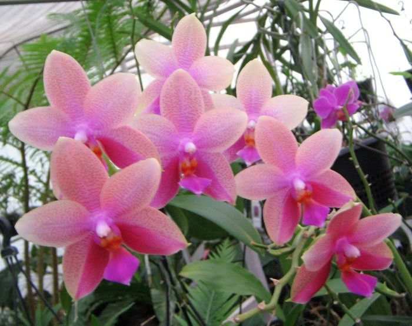

Phal. Sweet Memory Liodoro
Орхідея Ліодор - це найкрасивіша і прекрасна орхідея з фаленопсисів. Має різноманітно забарвлені квіти у формі зірочок, які пахнуть, з м'якими листочками і з шовковистим блиском. Крім цього великі квітконоси. Phalaenopsis Sweet Memory Liodoro - це повна назва квітки орхідеї Ліодор. Зареєстрований американською фірмою в 1982 році.
У природі батькb орхідеї фаленопсис Ліодоро можна зустріти в малазійських тропічних лісах, саме там вони ростуть на деревах і між камінням. Крім цього сорт Phalaenopsis violacea зустрічається на північному узбережжі Австралії та в Китаї.
